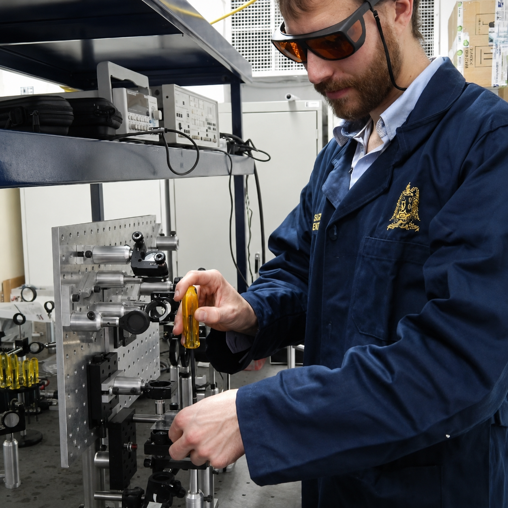

fenômenos de transporte e
aplicações em energia por meio
da pesquisa e do ensino.
Como pesquisador, tenho especial interesse em investigar tanto os aspectos fundamentais quanto as aplicações práticas dos fenômenos de transporte. Minha experiência concentra-se principalmente em mecânica dos fluidos e tecnologia energética, utilizando métodos experimentais e numéricos.
Atualmente, atuo como professor e pesquisador na Universidade do Estado do Rio de Janeiro, Brasil, com atividades de pesquisa voltadas para mecânica dos fluidos experimental, escoamentos turbulentos, escoamentos com partículas, diagnósticos de escoamento e aplicações termo-fluidas.
Meu trabalho conecta investigações fundamentais da física dos escoamentos com problemas aplicados de engenharia, incluindo escoamentos em tubulações, incrustações, sistemas multifásicos, transferência de calor e aplicações relacionadas à energia.
Pesquisa & Publicações
Pesquisa
Minha pesquisa combina mecânica dos fluidos experimental, diagnósticos de escoamento, modelagem e simulação para estudar fenômenos de transporte em sistemas de engenharia. O trabalho abrange desde escoamentos turbulentos e com partículas, relevantes para garantia de escoamento, até problemas termo-fluidos em energias renováveis e armazenamento de energia.

Mecânica dos Fluidos Experimental, Diagnósticos de Escoamento & Garantia de Escoamento
Minha principal área de pesquisa é a mecânica dos fluidos experimental aplicada a problemas de garantia de escoamento. Investigo escoamentos turbulentos e com partículas, estruturas coerentes, efeitos de entrada, incrustações e deposição. Este trabalho combina diagnósticos avançados de escoamento, como PIV, LDA e medições de escoamento, com análise estatística avançada de dados.
Energias Renováveis & Armazenamento de Energia
Uma segunda linha de pesquisa concentra-se em energias renováveis e sistemas de armazenamento de energia, principalmente por meio de modelagem e simulação numérica. Estudo transferência de calor, materiais de mudança de fase, gerenciamento térmico passivo, aplicações solar-térmicas e sistemas energeticamente eficientes, com ênfase na compreensão do comportamento térmico e no apoio a decisões de projeto.

Publicações Selecionadas em Periódicos
2026
-
C. Monreal Jiménez, J. Rojas Ricca, R. Jäckel, J. A. Araoz Ramos, G. Barrios, A. Ramos Blanco, and G. Gutiérrez-Urueta.
Enhancing Solar Thermal Resource Continuity in Mexican Climates Using PCM-Based Thermal Energy Storage: Transient Modeling and Performance Comparison.
-
C. Monreal Jiménez, A. Jiménez-Godoy, G. Barrios, R. Jäckel, A. Ramos Blanco, and G. Gutiérrez-Urueta.
Generalization of Machine Learning Surrogates Across Building Orientation and Roof Solar Absorptance in Naturally Ventilated Dwellings.
2025
-
B. E. Owolabi, R. Jäckel, L. Moriconi, and J. B. R. Loureiro.
Large heavy particles in turbulent pipe flows: Skin friction drag, turbulence modulation and preferential particle distribution.
-
C. Avilés-Cruz, M. Magos-Rivera, R. Jäckel, H. Puebla, and J. Ramírez-Muñoz.
Deep learning model for flow regime identification in mixing tanks from pressure signals.
-
S. Ayala-Zambrano, R. Jäckel, G. L. Gutiérrez-Urueta, A. Ramos Blanco, and C. Monreal Jiménez.
Parametric optimization of cylindrical vaccine transport containers with dual phase change materials to prevent vaccine freezing and heat damage using artificial neural networks.
2024
-
R. Jäckel, B. Magacho, B. E. Owolabi, L. Moriconi, and J. B. R. Loureiro.
Experimental characterization of coherent states in turbulent magnetohydrodynamic pipe flow.
-
B. G. Gamboa-Loya, R. Jäckel, G. L. Gutiérrez-Urueta, C. Monreal-Jiménez, J. E. Rojas-Ricca, and R. Peña-Gallardo.
Assessment of thermal comfort with phase change materials in a standard house for different Mexican climates: a simulation study using EnergyPlus.
2023
-
R. Jäckel, B. Magacho, B. E. Owolabi, L. Moriconi, D. J. C. Dennis, and J. B. R. Loureiro.
Stochastic model of organizational state transitions in a turbulent pipe flow.
-
R. Jäckel, B. Magacho, B. E. Owolabi, L. Moriconi, D. J. C. Dennis, and J. B. R. Loureiro.
Coherent organizational states in turbulent pipe flow at moderate Reynolds numbers.
2021
-
R. Jäckel, G. Gutiérrez-Urueta, and F. Tapia.
A review on Pitot tube icing in aeronautics: Research, design and characterization — future trends.
2020
-
R. Jäckel, F. Tapia, G. Gutiérrez-Urueta, and C. Monreal Jiménez.
Design of an aeronautic Pitot probe with a redundant heating system incorporating phase change materials.
2019
-
R. Jäckel, G. L. Gutiérrez Urueta, F. Tapia Rodríguez, and C. Monreal Jiménez.
Numerical and experimental characterisation of an aeronautic Pitot probe.
Ensino & Orientação
Ensino
- 2026.1: Métodos Experimentais em Transferência de Calor e Massa, Programa de Pós-graduação em Engenharia Mecânica (PPGEM), UERJ.
- 2026.1: Fundamentos de Transferência de Calor e Masssa, Departamento de Engenharia Sanitária e Meio Ambiente (DESMA), UERJ.
- 2026.1: Mecânica dos Fluidos 3, Faculdade de Oceanografia (FAOC), UERJ.
- 2025.2: Fundamentos de Transferência de Calor e Massa, Departamento de Engenharia Sanitária e Meio Ambiente (DESMA), UERJ.
- 2025.2: Mecânica dos Fluidos 3, Faculdade de Oceanografia (FAOC), UERJ.
- 2025.2: Fenômenos de Transporte, Faculdade de Engenharia (FEN), UERJ.
- 2025.2: Fundamentos de Camada Limite, Programa de Pós-graduação em Engenharia Mecânica (PPGEM), UERJ.
- 2025.1: Fundamentos de Transferência de Calor e Massa, Departamento de Engenharia Sanitária e Meio Ambiente (DESMA), UERJ.
- 2025.1: Mecânica dos Fluidos 3, Faculdade de Oceanografia (FAOC), UERJ.
- 2022.2: Técnicas Experimentales en Termofluidos, Programa de Pós-graduação em Engenharia Mecânica, Universidad Autónoma de San Luis Potosí (UASLP), México.
Orientação de Estudantes
Orientações em Andamento
-
Karolyna Gomes dos Santos — Tese de doutorado
Análise Experimental de uma Válvula AICD Circunscrita em Caixa de Acrílico Utilizando Técnicas de PIV [Experimental analysis of an AICD valve enclosed in an acrylic box using PIV techniques].
Universidade Federal do Rio de Janeiro, Brasil.
Coorientação com a Profa. Juliana Rodrigues Braga Loureiro.
Período: 2025–2029, previsto. -
Lorena de Azeredo Leite Souza — Dissertação de mestrado
Heat Transfer Modeling in Phase Change Materials via the Generalized Integral Transform Technique.
Universidade do Estado do Rio de Janeiro, Brasil.
Coorientação com o Prof. Daniel Chalhub.
Período: 2026–2028, previsto. -
Sandra Ayala-Zambrano — Tese de doutorado
Study and optimization of design parameters of vaccine transport boxes by means of experimental and numerical analysis.
Mechanical Engineering Program, Universidad Autónoma de San Luis Potosí, México.
Coorientação com a Profa. Geydy Luz Gutiérrez Urueta.
Período: 2022–2028, previsto.
Orientações Concluídas
-
Gustavo Prado Ferreira — Dissertação de mestrado
Estudo Experimental da Turboforese de Partículas Inerciais Densas em um Escoamento Sólido-Líquido Descendente [Experimental study of the turbophoresis of dense inertial particles in a descending solid-liquid flow].
Universidade Federal do Rio de Janeiro, Brasil.
Coorientação com a Profa. Juliana Rodrigues Braga Loureiro.
Período: 2023–2026. -
Brayan Gerardo Loya Gamboa — Dissertação de mestrado
Prediction of thermal comfort in Mexican homes integrating phase change materials using machine learning algorithms.
Mechanical Engineering Program, Universidad Autónoma de San Luis Potosí, México.
Coorientação com a Profa. Geydy Luz Gutiérrez Urueta.
Período: 2022–2024. -
Jonathan Eli Ricca Rojas — Dissertação de mestrado
Modeling and simulation of a solar Stirling engine with cogeneration incorporating phase change materials for continuous operation.
Mechanical Engineering Program, Universidad Autónoma de San Luis Potosí, México.
Coorientação com a Profa. Geydy Luz Gutiérrez Urueta.
Período: 2022–2024.
Consultoria & Patentes
Meu trabalho aplicado inclui consultoria técnica, desenvolvimento de patentes e pesquisa orientada à indústria em mecânica dos fluidos, medição de escoamento, sistemas termo-fluidos e garantia de escoamento. Essas atividades conectam a pesquisa experimental e numérica a desafios práticos de engenharia, incluindo projeto de sensores, mitigação de gelo, prevenção de incrustações e gerenciamento térmico.
Experiência em Consultoria
Consultoria técnica em projeto e degelo de sondas de dados de ar
Cliente: Paul Hastings LLP, representando a Joby Aviation, Inc.
Período: Novembro de 2025 – Março de 2026
Área: sondas de dados de ar, sistemas Pitot, degelo,
análise termo-fluida, revisão técnica especializada
Esta consultoria envolveu suporte técnico especializado em conexão com uma questão de litígio nos Estados Unidos relacionada a sondas de dados de ar e seu projeto. O trabalho utilizou conhecimentos em sistemas de tubo Pitot, projeto de sondas de dados de ar, conceitos de degelo e anti-gelo, engenharia termo-fluida e medição de escoamento. A atividade envolveu análise técnica independente e revisão de conceitos de engenharia relacionados ao projeto de sondas de dados de ar e proteção térmica, respeitando as obrigações de confidencialidade associadas ao caso.
Análise térmica e apoio ao projeto de um sistema industrial de climatização
Cliente: Mabe Leiser S.A. de C.V.
Período: Dezembro de 2023 – Junho de 2024
Área: análise térmica, conforto térmico, modelagem e simulação
Este projeto de consultoria envolveu a análise térmica e a simulação de variações de temperatura em uma instalação industrial. O trabalho incluiu modelagem térmica com base em dados de processo, informações de equipamentos e condições de escoamento de ar, bem como a avaliação do conforto térmico em cenários típicos de operação no verão e no inverno. O projeto resultou em um relatório técnico detalhado com recomendações para manter a temperatura da instalação dentro de uma faixa de conforto especificada.
Patentes
Sistema magnético modular e método de prevenção de incrustações
Título original:
Sistema magnético modular e método de prevenção de incrustações
Patente: BR10202501845
País: Brasil
Status: Depositado, 29/08/2025
Inventores: Robert Jäckel, Juliana B. R. Loureiro,
André S. Freire, Luca Moriconi
Esta patente descreve um sistema magnético modular e um método para prevenção de incrustações. O conceito está associado ao uso de campos magnéticos em escoamentos internos e busca influenciar processos de transporte, deposição e formação de incrustações em sistemas de engenharia. A aplicação é particularmente relevante para garantia de escoamento, mitigação de incrustações inorgânicas, sistemas de tubulações e transporte industrial de fluidos.
Contêiner portátil cilíndrico equipado com dois PCMs para o transporte de produtos sensíveis à temperatura
Título original:
Contenedor portátil cilíndrico equipado con dos PCMs para el transporte de productos sensibles a la temperatura
Patente: MX/A/2025/006497
País: México
Status: Concedido, 28/05/2026
Inventores: Sandra A. Zambrano, Robert Jäckel,
Alberto R. Blanco, Geydy L. Gutiérrez Urueta, Cintia Monreal Jiménez
Esta patente trata de um contêiner portátil cilíndrico equipado com dois materiais de mudança de fase para o transporte de produtos sensíveis à temperatura. O sistema foi concebido para reduzir tanto o risco de superaquecimento quanto o de congelamento durante o transporte. O conceito é relevante para logística de cadeia fria, transporte de vacinas, produtos biomédicos e gerenciamento térmico passivo.
Tubo Pitot aeronáutico com sistema de aquecimento auxiliar baseado em material de mudança de fase
Título original:
Tubo Pitot aeronáutico con sistema de calefacción auxiliar basado en material de cambio de fase
Patente: MX/A/2019/000720
País: México
Status: Concedido, 21/08/2023
Inventores: Robert Jäckel, Fidencio Tapia Rodríguez,
Geydy Gutiérrez Urueta
Esta patente trata de um tubo Pitot aeronáutico equipado com um sistema de aquecimento auxiliar baseado em material de mudança de fase. O conceito foi desenvolvido para melhorar a proteção térmica e a confiabilidade operacional em condições de formação de gelo, combinando aquecimento convencional com armazenamento térmico passivo. O trabalho está relacionado à segurança da medição de escoamento em aplicações aeronáuticas e ao gerenciamento térmico de sondas de medição.
CV
Formação Acadêmica
-
2018–2023:
Doctor of Science (D.Sc.) in Mechanical Engineering,
Universidade Federal do Rio de Janeiro, Brasil.
Tese: Study of coherent organizational states in plain and magnetohydrodynamic pipe flow turbulence using SPIV.
Orientadores: Profa. Juliana Rodrigues Braga Loureiro e Prof. Luca Moriconi. -
2015–2018:
Master of Mechanical Engineering (M.Eng.) with focus on Thermofluids,
Universidad Autónoma de San Luis Potosí, México.
Dissertação: Design of an aeronautic Pitot probe with a redundant heating system incorporating phase change materials.
Orientadora: Profa. Geydy Luz Gutiérrez Urueta. -
2010–2015:
Licentiate’s Degree in Mechanical Engineering with focus on Energy Technology,
Universidad Autónoma Metropolitana, México.
Dissertação: Modeling and simulation of thermal comfort conditions in a building using a passive acclimation system based on incorporated phase change materials.
Orientador: Prof. Jorge Ramírez Muñoz.
Experiência Acadêmica e Industrial
- 2025–presente: Professor de Engenharia Mecânica, Universidade do Estado do Rio de Janeiro, Brasil.
- 2023–2025: Pesquisador de pós-doutorado em Engenharia Mecânica, Universidade Federal do Rio de Janeiro, Brasil.
-
2002–2006:
Formação profissional como Técnico em Mecatrônica,
Prinovis Ltd. & Co. KG, planta industrial de impressão, Ahrensburg, Alemanha.
Durante essa formação, foram desenvolvidas competências em mecânica, eletrônica e sistemas de controle. A formação proporcionou experiência prática na instalação, operação e manutenção da cadeia de processos de uma instalação industrial de grande escala.
Contato
E-mail institucional: robert.jaeckel [at] eng.uerj.br
Para colaborações acadêmicas, orientação de estudantes, demandas de consultoria ou projetos técnicos, entre em contato por e-mail ou por meio de um dos perfis acadêmicos listados abaixo.
Perfis Acadêmicos
- Lattes Curriculum: lattes.cnpq.br/8702041223970357
- ORCID: orcid.org/0000-0002-6445-9350
- Scopus: Perfil de Autor no Scopus
- Google Scholar: Perfil no Google Scholar
- ResearchGate: Perfil no ResearchGate
- LinkedIn: Perfil no LinkedIn